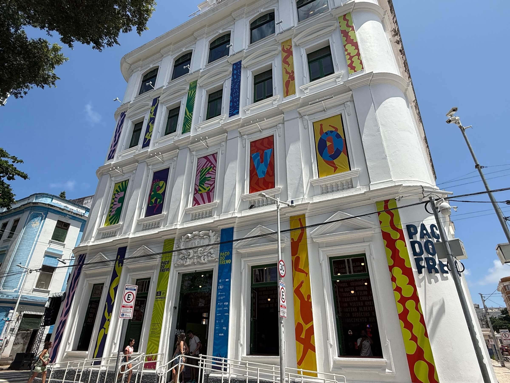
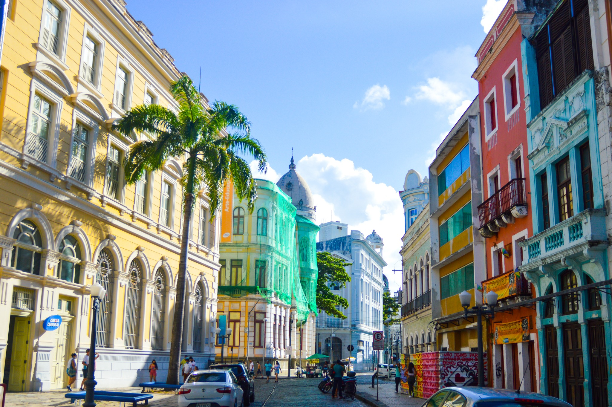

Paço do Frevo

O Paço do Frevo é um espaço cultural dedicado à dança e à música do frevo, patrimônio cultural brasileiro.
Rua do Bom Jesus

A Rua do Bom Jesus é uma das ruas mais bonitas do Recife Antigo, famosa por suas cores e construções históricas.
Voltar para a página inicial